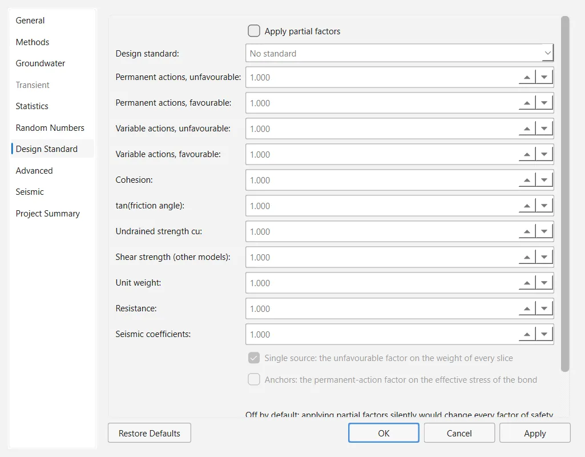

Una norma de diseño aplica coeficientes parciales a los datos de entrada del análisis: las resistencias y los pesos específicos se dividen, y el peso del terreno y las cargas se multiplican. El resultado se presenta como un factor de sobredimensionamiento, que debe superar 1, en lugar de como un factor de seguridad. OGR Slip2D ofrece cuatro ajustes predefinidos, que corresponden a los enfoques de proyecto del Eurocódigo 7 (DA1 con sus dos combinaciones, DA2 y DA3), y permite introducir coeficientes propios. El fundamento de los coeficientes está en la Sección 3.12.
2.11.1La página Design Standard#
Los coeficientes se definen en Analysis → Project Settings → Design Standard. En un proyecto nuevo, Apply partial factors está desactivado: aplicar coeficientes sin avisar cambiaría todos los factores de seguridad calculados hasta entonces, así que debe ser una decisión deliberada. Con la casilla marcada, Design standard ofrece No standard, Eurocode 7 — DA1 Combination 1, Eurocode 7 — DA1 Combination 2, Eurocode 7 — DA2, Eurocode 7 — DA3 y Custom standard. Al elegir una norma, sus coeficientes se cargan en las once casillas inferiores, que solo se pueden editar con Custom standard. La mayoría admite de 0.1 a 10. Los dos coeficientes de las acciones desfavorables no bajan de 1.0, el de las permanentes favorables va de 0.1 a 1.0 y el de las variables favorables de 0 a 1.0: son los límites que el análisis comprueba antes de calcular.
Debajo de los coeficientes hay dos casillas que deciden cómo se reparten los coeficientes de las acciones entre las dovelas. Se pueden cambiar con cualquier norma:
- Single source (marcada por defecto): el peso del terreno de todas las dovelas recibe el coeficiente desfavorable de las acciones permanentes, porque el peso del terreno sobre la superficie es una sola acción permanente de un mismo origen. Sin marcar, la dovela cuya base empuja el deslizamiento recibe el coeficiente desfavorable, y la que tiene la base remontando en contra, el favorable; solo entonces se lee la casilla favorable.
- Anchors (sin marcar por defecto): el coeficiente de las acciones permanentes multiplica también la tensión vertical efectiva que lee el bulbo de un soporte, es decir, el terreno que tiene encima y las cargas permanentes. Las cargas variables nunca llevan coeficiente ahí.

| Campo | Coeficiente | Aplicación |
|---|---|---|
| Permanent actions, unfavourable | γG | Multiplica el peso del terreno de todas las dovelas (con Single source) o de las dovelas cuya base empuja el deslizamiento (sin ella), y toda carga permanente que empuje el deslizamiento. |
| Permanent actions, favourable | γG,fav | Multiplica toda carga permanente que se oponga al deslizamiento y, sin Single source, el peso del terreno de las dovelas cuya base se opone a él. |
| Variable actions, unfavourable | γQ | Multiplica toda carga variable que empuje el deslizamiento. |
| Variable actions, favourable | γQ,fav | Multiplica toda carga variable que se oponga al deslizamiento; con 0, el valor de los ajustes predefinidos, esa carga queda fuera del cálculo. |
| Cohesion | γc′ | Divide la cohesión efectiva y la ordenada en el origen de las envolventes de resistencia del desembalse rápido. |
| tan(friction angle) | γφ′ | Divide tan φ′, la tan φb de la resistencia no saturada y la pendiente de las envolventes del desembalse rápido. |
| Undrained strength cu | γcu | Divide la resistencia al corte sin drenaje. |
| Shear strength (other models) | γτ | Divide la resistencia al corte completa de los modelos que no son ni c′–φ′ ni sin drenaje. |
| Unit weight | γγ | Divide el peso específico y el peso específico saturado de cada material, como cualquier coeficiente de material divide su propiedad; hacer el terreno más pesado le corresponde a γG. |
| Resistance | γR;e | Divide las cuatro categorías de resistencia anteriores, es decir, todo el lado resistente. |
| Seismic coefficients | — | Multiplica y . No se aplica cuando el cálculo busca el coeficiente crítico (Compute Ky o un análisis de Newmark), y las notas del análisis lo indican. |
2.11.2Los ajustes predefinidos#
Los ajustes predefinidos siguen los enfoques de proyecto de la norma UNE-EN 1997-1, anexo A (CEN, 2004).
| Ajuste predefinido | γG | γG,fav | γQ | γQ,fav | γc′ | γφ′ | γcu | γτ | γγ | γR;e | Sísmico |
|---|---|---|---|---|---|---|---|---|---|---|---|
| DA1 Combination 1 | 1.35 | 1.0 | 1.5 | 0 | 1.0 | 1.0 | 1.0 | 1.0 | 1.0 | 1.0 | 1.0 |
| DA1 Combination 2 | 1.0 | 1.0 | 1.3 | 0 | 1.25 | 1.25 | 1.4 | 1.25 | 1.0 | 1.0 | 1.0 |
| DA2 | 1.35 | 1.0 | 1.5 | 0 | 1.0 | 1.0 | 1.0 | 1.0 | 1.0 | 1.1 | 1.0 |
| DA3 | 1.0 | 1.0 | 1.3 | 0 | 1.25 | 1.25 | 1.4 | 1.25 | 1.0 | 1.0 | 1.0 |
El coeficiente de Shear strength (other models) no procede de la norma UNE-EN 1997-1: los ajustes predefinidos lo igualan al γφ′ del mismo conjunto, de modo que una envolvente de resistencia que no se puede descomponer en c′ y tan φ′ se reduce igual que lo haría el propio factor de seguridad. Es una decisión del programa, y se puede cambiar con Custom standard. El 0 del coeficiente de las acciones variables favorables es el valor de la norma UNE-EN 1997-1, anexo A: una carga variable que ayudaría al talud puede no estar presente, así que se deja fuera. No standard pone los once coeficientes en 1.0.
2.11.3A qué se aplican los coeficientes y cómo#
Los coeficientes se aplican a una copia del proyecto al iniciar un análisis, de modo que el modelo no se modifica, y al desactivar la norma se recuperan los resultados sin coeficientes. Todos los análisis se calculan sobre esa copia: Compute, cada muestra de Compute Statistics, el Drawdown Level Sweep, Optimize Surfaces, el retroanálisis de la fuerza de los soportes y los factores de seguridad de las etapas del análisis transitorio.
Los coeficientes de los materiales dividen y los de las acciones multiplican, de modo que cada uno actúa en el sentido desfavorable. El coeficiente del ángulo de rozamiento se aplica a su tangente, como establece el Eurocódigo 7: con γφ′ = 1.25, un ángulo de rozamiento de 30° pasa a ser 24.79° y no 24°. Cada modelo de resistencia declara a cuál de las cuatro categorías pertenecen sus parámetros; si un modelo no declara ninguna, no se le aplican coeficientes y las notas del análisis lo mencionan.
Los coeficientes de las acciones se aplican dovela a dovela, porque que un peso o una carga ayude o empuje depende de la superficie. El sentido del deslizamiento se lee en las dovelas sin coeficientes, y el peso del terreno de una dovela empuja cuando su base buza en ese sentido. Cada carga se clasifica entera, por lo que hace en conjunto a lo largo del deslizamiento, así que una carga que pasa por encima del punto más bajo de un círculo recibe un solo coeficiente. Todos los términos leen el peso con coeficiente: la fuerza sísmica pseudoestática, la tensión vertical de los modelos de resistencia que la usan y las presiones intersticiales que se calculan a partir del peso ( y el exceso de presión intersticial del método B-bar). Las fuerzas de los soportes se usan tal como se introducen, salvo por la opción Anchors descrita arriba.
Los coeficientes de los materiales y el sísmico se aplican a la copia, que los métodos de dovelas y las búsquedas leen como un proyecto cualquiera. Los coeficientes de las acciones viajan con la copia y los aplica el rebanador, de modo que llegan a todas las superficies de cualquier búsqueda. Las notas del análisis de un cálculo con coeficientes empiezan con la línea Design standard applied: … — the reported value is an over-design factor, not a factor of safety, and must exceed 1 (norma de diseño aplicada: el valor indicado es un factor de sobredimensionamiento, no un factor de seguridad, y debe superar 1), y a continuación indican qué se ha factorizado: los materiales, el peso del terreno, las cargas y los coeficientes sísmicos, o que la norma está activa con todos los coeficientes en 1.0.
Código: ogr_slip2d/design_actions.py · OGR-Core: ogr_core/project/design_factors.py · ogr_core/project/settings.py · ogr_core/loads/actions.py2.11.4Interpretación del factor de sobredimensionamiento#
Cuando se aplica una norma, la barra de estado, el panel Results y la ventana Interpret rotulan el valor crítico como Over-design factor en lugar de factor de seguridad. Se calcula del mismo modo que un factor de seguridad, pero sobre el modelo con los coeficientes aplicados, así que responde a otra pregunta: un valor superior a 1 significa que el talud cumple el estado límite con los coeficientes parciales elegidos (Frank et al., 2004).
Si los cuatro coeficientes de resistencia son iguales a un mismo valor γ, el coeficiente de resistencia es 1 y no se aplica ningún coeficiente a las acciones, a los pesos específicos ni a los coeficientes sísmicos, la resistencia se divide por γ para cualquier tensión normal y el factor de sobredimensionamiento es el factor de seguridad dividido por γ, con todos los métodos:
DA1 Combination 2, en un talud de materiales c′–φ′ sin cargas exteriores, es ese caso, con γ = 1.25: un talud con factor de seguridad 1.30 tiene un factor de sobredimensionamiento de 1.04.
Con Apply partial factors marcada y todos los coeficientes en 1.0 (el ajuste No standard, por ejemplo), no cambia nada, pero el valor se sigue rotulando como factor de sobredimensionamiento; las notas del análisis indican que no se ha aplicado ningún coeficiente. El informe en PDF de File → Generate Report… tiene una sección Design Standard con la norma, lo que se ha factorizado y las notas del cálculo, y rotula el valor como Over-design Factor.
2.11.5Lo que queda sin coeficiente#
Algunos datos no reciben coeficiente parcial, sea cual sea la norma:
- El agua fuera del terreno. El peso y el empuje del agua embalsada y el empuje del agua en una grieta de tracción se llevan aparte del peso del terreno y no reciben coeficiente. Tampoco lo reciben las presiones intersticiales que salen de un nivel freático, una línea piezométrica, una rejilla de presiones de agua o un análisis de filtración; solo las que se calculan a partir del peso ( y el exceso del método B-bar) siguen al peso con coeficiente.
- Los soportes. Sus fuerzas y capacidades se usan tal como se introducen. Con Anchors marcada, γG solo llega a la tensión vertical efectiva que lee un bulbo.